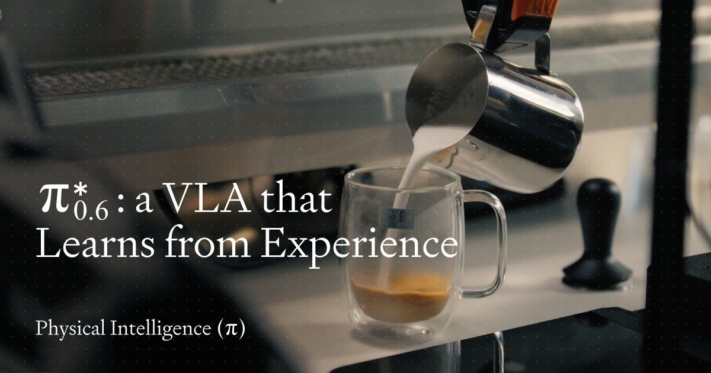
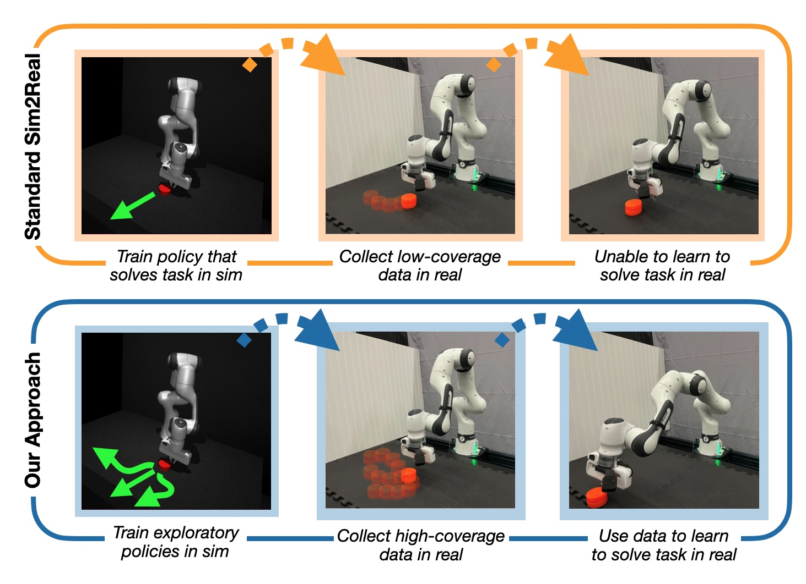
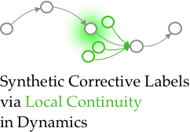
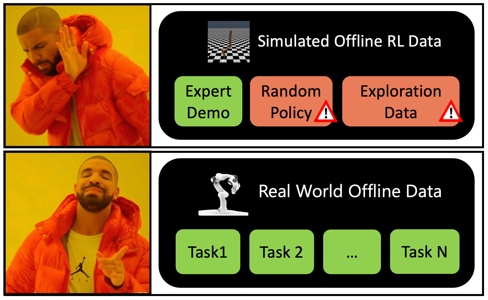
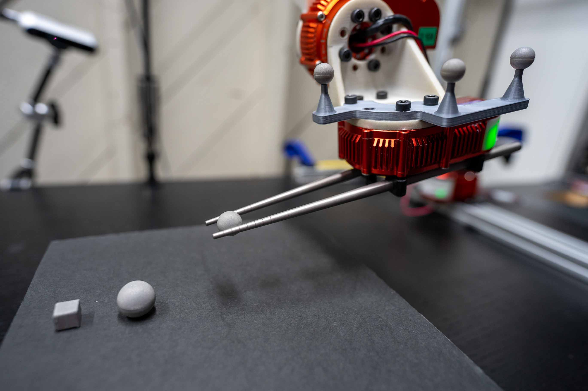
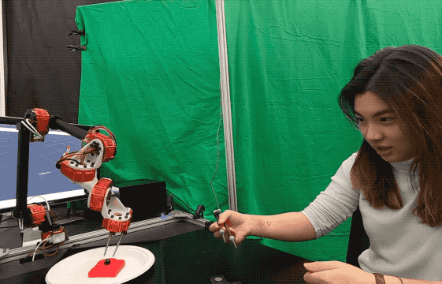
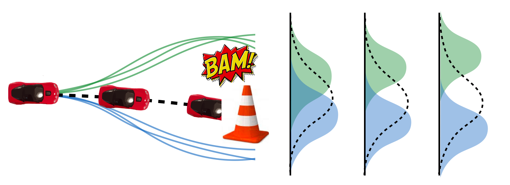
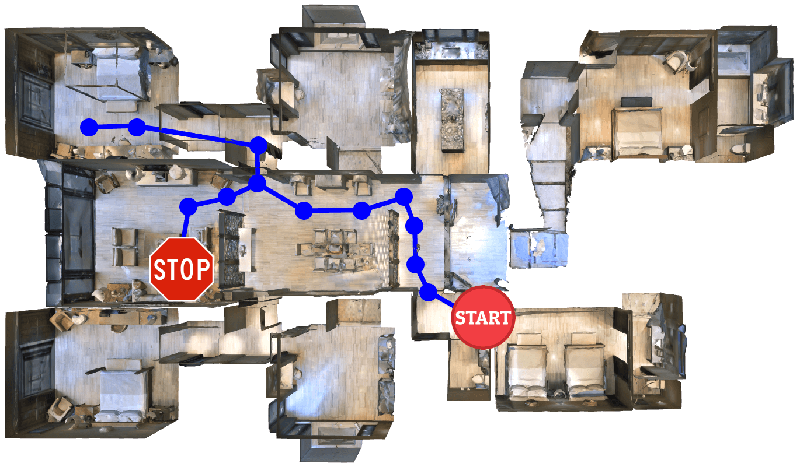

Kay - Liyiming Ke
Hi 👋 I work at Physical Intelligence
researching on Machine Learning for Robot Manipulation.
During my PhD at University of Washington, I built a chopsticks-welding robot to showcase data-driven fine
motor skills.
My path to robotics started unconventionally—I majored in Economics before diving into AI, with internships at
Meta AI, Microsoft Research, and Google Search along the way. I’m driven by curiosity and currently I aim to
design robot policies that master Robustness, Precision, and Dexterity.
Formal Bio G. Scholar Github LinkedIn Twitter
kay at physical intelligence dot company

RL Token: Bootstrapping Online RL with Vision-Language-Action Models
Charles Xu, Jost Tobias Springenberg, Michael Equi, Ali Amin, Adnan Esmail, Sergey Levine, Liyiming Ke
Webpage •
PDF •
Summary
Introduces RL tokens (RLT), a lightweight interface between a VLA and an online RL policy,
enabling fast adaptation for precise, delicate manipulation tasks from minutes or hours of
real-world experience.

π*0.6: a VLA That Learns From Experience
Ali Amin, Raichelle Aniceto, Ashwin Balakrishna, Kevin Black, Ken Conley,
Grace Connors, James Darpinian, Karan Dhabalia, Jared DiCarlo, Danny Driess, Michael Equi,
Adnan Esmail, Yunhao Fang, Chelsea Finn, Catherine Glossop, Thomas Godden, Ivan Goryachev,
Lachy Groom, Hunter Hancock, Karol Hausman, Gashon Hussein, Brian Ichter, Szymon Jakubczak,
Rowan Jen, Tim Jones, Ben Katz, Liyiming Ke, Chandra Kuchi, Marinda Lamb, Devin LeBlanc,
Sergey Levine, Adrian Li-Bell, Yao Lu, Vishnu Mano, Mohith Mothukuri, Suraj Nair, Karl Pertsch,
Allen Z. Ren, Charvi Sharma, Lucy Xiaoyang Shi, Laura Smith, Jost Tobias Springenberg,
Kyle Stachowicz, Will Stoeckle, Alex Swerdlow, James Tanner, Marcel Torne, Quan Vuong,
Anna Walling, Haohuan Wang, Blake Williams, Sukwon Yoo, Lili Yu, Ury Zhilinsky, Zhiyuan Zhou
Webpage •
PDF •
Summary
Enable VLA to improve from real-world autonomous rollout and human coaching during deployment time, via reinforcement learning.
π0.5: A Vision-Language-Action Model with Open World Generalization
Kevin Black, Noah Brown, James Darpinian, Karan Dhabalia, Danny Driess, Adnan Esmail, Michael Equi, Chelsea
Finn, Niccolo Fusai, Manuel Y Galliker, Dibya Ghosh, Lachy Groom, Karol Hausman, Brian Ichter, Szymon
Jakubczak, Tim Jones, Liyiming Ke, Devin LeBlanc, Sergey Levine, Adrian Li-Bell, Mohith Mothukuri,
Suraj Nair, Karl Pertsch, Allen Z Ren, Lucy Xiaoyang Shi, Laura Smith, Jost Tobias Springenberg, Kyle
Stachowicz, James Tanner, Quan Vuong, Homer Walke, Anna Walling, Haohuan Wang, Lili Yu, Ury Zhilinsky
Webpage •
PDF •
Summary
We send mobile robots to many AirBnB houses to generalize tasks across diverse, real-world environments.
Our robots can perform some household chores like cleaning kitchens in unseen houses.
Hi Robot: Open-Ended Instruction Following with Hierarchical Vision-Language-Action Models
Lucy Xiaoyang Shi, Brian Ichter, Michael Equi, Liyiming Ke, Karl Pertsch, Quan Vuong, James Tanner,
Anna Walling, Haohuan Wang, Niccolo Fusai, Adrian Li-Bell, Danny Driess, Lachy Groom, Sergey Levine, Chelsea
Finn
ICML 2025
Webpage •
PDF •
Summary
We introduce a hierarchical system enabling robots to “think aloud” and deconstruct complex tasks ("make
me a sandwich") into
manageable steps ("pick up bread, pick up tomato, put tomato on the bread ..."). By combining a
low-level action
model for execution and a
high-level
vision-language model for reasoning and interaction with human inputs, we allow robots to follow complex
instructions and perform tasks with high
precision and adaptability.
π0: A Vision-Language-Action Flow Model for General Robot Control
Kevin Black, Noah Brown, Danny Driess, Adnan Esmail, Michael Equi, Chelsea Finn, Niccolo Fusai,
Lachy Groom, Karol Hausman, Brian Ichter, Szymon Jakubczak, Tim Jones, Liyiming Ke, Sergey Levine,
Adrian Li-Bell, Mohith Mothukuri, Suraj Nair, Karl Pertsch, Lucy Xiaoyang Shi, James Tanner, Quan Vuong,
Anna Walling, Haohuan Wang, Ury Zhilinsky
RSS 2025
Webpage •
PDF •
Summary
Can you train cross-embodiment robotic policies over many many tasks and expect it to work? We show that
it is promising: a big pre-training model can be finetuned on a single task and outperform
dedicated policy that has only seen task-specific data.

Overcoming the Sim-to-Real Gap: Leveraging Simulation to Learn to Explore for Real-World RL
Andrew Wagenmaker, Kevin Huang, Liyiming Ke, Byron Boots, Kevin Jamieson, Abhishek Gupta
NeurIPS 2024
PDF •
Summary
We show that, learning an exploration policy in simulation can boost the real-world reinforcement
learning
finetuning efficiency (versus learning an optimal policy in the sim and transfer the policy).
Data Efficient Behavior Cloning for Fine Manipulation via Continuity-based Corrective Labels
Abhay Deshpande, Liyiming Ke, Quinn Pfeifer, Abhishek Gupta, Siddhartha S. Srinivasa
IROS 2024
Webpage •
PDF •
Summary
We apply CCIL to real world robotic manipulation tasks and it kinda worked after some design tweak. The
most juice comes from setting up trust threshold for the generated labels in a task-agnostic way.

CCIL: Continuity-based Data Augmentation for Corrective Imitation Learning
Liyiming Ke*, Yunchu Zhang*, Abhay Deshpande, Siddhartha Srinivasa, Abhishek Gupta
ICLR 2024
Webpage •
Code •
PDF •
Summary
Enhances robustness of imitation learning by generating synthetic corrective labels:
The trick is to leverage local continuity in the environment dynamics - and for regions that are
discontinuous, quantify the confidence and skip them.
Cherry Picking with Reinforcement Learning
Yunchu Zhang*, Liyiming Ke*, Abhay Deshpande, Abhishek Gupta, Siddhartha Srinivasa
RSS 2023
Webpage •
PDF •
Summary
Use reinforcement learning to learn fine motor skills: pick up slippery cherries with chopsticks under
wind or human disturbances. And I refuse to do parameter sweeping or random seed cherry picking.

Real World Offline Reinforcement Learning with Realistic Data Sources
Gaoyue Zhou*, Liyiming Ke*, Siddhartha Srinivasa, Abhinav Gupta, Aravind Rajeswaran, Vikash Kumar
ICRA 2023
Webpage •
PDF •
Summary
Eval offline RL in real-world: emphasize on data being "kinda good" but not perfect.

Grasping with Chopsticks: Combating Covariate Shift in Model-free Imitation Learning for Fine Manipulation
Liyiming Ke, Jingqiang Wang, Tapomayukh Bhattacharjee, Byron Boots, Siddhartha S. Srinivasa
ICRA 2021
PDF •
Summary
Teach a robot to use chopsticks for precise manipulation tasks through human demonstrations: Addresses
covariate shift in imitation learning by noise-injection, object-centric transformation and
bunch of hacks.

Telemanipulation with Chopsticks: Analyzing Human Factors in User Demonstrations
Liyiming Ke, Ajinkya Kamat, Jingqiang Wang, Tapomayukh Bhattacharjee, Christoforos Mavrogiannis,
Siddhartha S. Srinivasa
IROS 2020
PDF •
Summary
Built a chopsticks robot and a fun human-interactive demo collection interface: turns out that tracking
a
wand and commmand the robot can be really easy.

Imitation Learning as f-Divergence Minimization
Liyiming Ke, Sanjiban Choudhury, Matt Barnes, Wen Sun, Gilwoo Lee, Siddhartha Srinivasa
WAFR 2020
PDF •
Summary
A unified theoretical framework for imitation learning! Turns out some SOTA algorithms are using
f-divergence. We show how different divergence measures lead to different imitation learning approaches.

Tactical Rewind: Self-Correction via Backtracking in Vision-and-Language Navigation
Liyiming Ke, Xiujun Li, Yonatan Bisk, Ari Holtzman, Zhe Gan, Jingjing Liu, Jianfeng Gao, Yejin Choi,
Siddhartha Srinivasa
CVPR 2019
★ Oral Presentation, CVPR (5.6%) ★
PDF •
Summary
Baking Search and Planning into ML-based navigation: We propose a new framework for VL navigation,
enabling agents to recover from mistakes by maintaining internal search tree and returning to previous
positions and trying alternative
paths.
Behavioral Experiments in Email Filter Evasion
Liyiming Ke, Bo Li, Yevgeniy Vorobeychik
AAAI 2016
PDF •
Summary
Studies how humans attempt to evade email spam filters.
Provides insights into adversarial behavior and implications for security system design.
2024
OpenAI Reading Group2023
Stanford University, ILIAD Lab2022
Cornell University, EmPRISE Lab2021
MetaAI Reading Group2018
Microsoft Research Dialogue Group Reading GroupReviewer of RSS, CoRL, ICLR, NeurIPS, ICRA, IJRR, IROS, RA-L, HRI, AAMAS, IJCAI
2025
I joined a podcast panel, 硅谷101, to chat about robot foundation model.2025
We open source π 0 on Github to empower the community by sharing our foundation models.2023
Honored to be selected as one of the Rising Stars in EECS2020
Chopsticks Robot featured on IEEE Spectrum Video Friday2020
Led a human-robot interactive demo at the AAAS gathering2017
Graduated as one of the Honor Scholars from Vanderbilt University2015
First prize in the Vanderbilt Student Consulting for Non-profit Organization-
Inspired by- •
- Distill
- •
- Lil' Log
- •
- Colah's Blog
- •